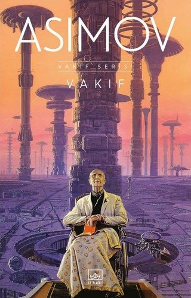
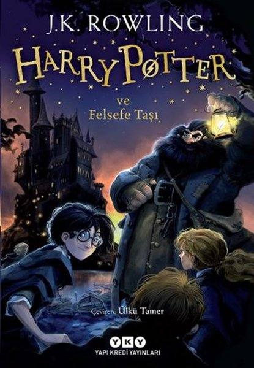
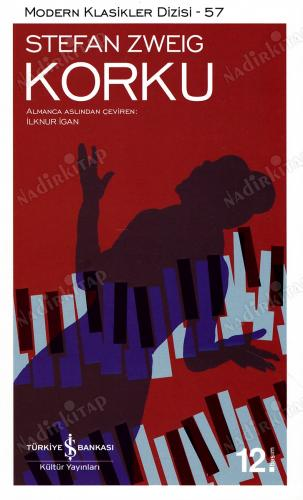

VAR MISIN? |
KÖRLÜK |
KAYIP TANRILAR ÜLKESİ |
ALTINCI KOĞUŞ |
BALIKÇI ve OĞLU |
|
Doğan Cüceloğlu son kitabı Deniz Bayramoğlu ile söyleşilerinden oluşuyor. Bu kitabında Cüceloğlu mesleki kimliğinin yanı sıra hayat tecrübelerini anlatan bir arkadaş gibi. Sohbet havasında geçen bu kitapta kendinizi keşfetmeye, zorluklarla başa çıkmaya var mısınız? |
Başarılı yazar Jose Saramago'nun 95 yılında yayınladığı kitap, görmek ve bakmak arasındaki farkı net bir şwkilde gösteriyor. "Bakabiliyorsan gör. Görebiliyorsan, gözle" cümlesiyle başlayan ve bir körlük salgını vasıtasıyla gerçekleri yüzüme vuran bir kitap. |
Ahmet Ümit, bu sefer polisiyeyi arkeoloji ve mitolojiyle harmanladığı bir romanla karşımıza çıkıyor. Zeus Atları ve Pargemon Tapınağı gölgesinde geçmişin mitlerini günümüze uyarlıyo. Berlin'den Bergama'ya uzanan bu macerada suçun doğasının çağlar boyunca değişmediğini yüzümüze vuruyor. |
Çehov'un 1982 çıkıslı kısa hiayesidir. Eğitimli hasta Ivan Dmitriç ve Doktor Andrey Yefimıç arasındaki felsefi çatışmayı anlatır. Ivan Dmitriç'in paranoyasına rağmen haksızlıkları başkaldırması ve doktorun kayıtsızlığı üstüne odaklanır. Doktor hatasını anladığında ise artık iş işten geçmiştir. |
Toplumsal konulara verdiği önemle bilinen Zülfü Livaneli'nin yeni kitanında da göçmenlik sorununu ele almış. Egede yaşayan bir balıkçı ailesinin gözünden yaşanan olayları izliyoruz. |
BEN, KIRKE |
VEBA GECELERİ |
CESUR YENİ DÜNYA |
YAKIN TARİHİN GERÇEKLERİ |
EMPEDOKLES'İN DOSTLARI |
|
2018 yılında çıkmış ve birçok değerlendirme kurumu tarafından yılın kitabı seçilmiştir. Birçok mitolojik karakterin yıllardır anlatılan hikayesini başka bir bakış açısıyla anlatıyor. Yıllardır ozanlar tarafından anlatılan cadılığın; nefret, kıskançlık veya kötülükten doğmadığını kanıtlıyor Kirke |
Orhan Pamuk'un 30 yılı aşkın süredir üzerinde düşündüğü ve yaklaşık 5 yıldır çalışıtığı romanıdır. 1900'lerde Osmanlı'da hayali bir adada geçen bir roman. Tarihi roman aynı zamanda aşk, siyaset gibi konuları da içinde barındırıyor. |
1932 yılında çıkmış ve distopik eserler arasındaki en popülerlerden biri olmuş kitap bir Aldous Huxley eseridir. Çarpıcı çıkarımlar ve kara mizahla birlikte eser yarattığı gelecekteki değerlerini kaybetmiş insanlara bize seslenir. Huxley'in bu eserinde bulunduğu dönemin karamsarlığını hissetmek de zor değildir. |
Türkiyenin yakın tarihini incelemek ve İlber Ortaylı'nın derin analizleriyle okumak isteyenler için harika bir seçenek. |
Amin Maalouf'un uzun yıllar sonra yayımladığı ilk kitabı. Yarı distopik bir temaya sahip kitap gerçek bilgiye erişim olmadığı bir gelecekte geçiyor. Bu durumun insanların hayatını nasıl etkilediği ve doğru savunan bir grubun nelerle yüzleşmesi gerektiğini anlatıyor. |
 |
Ray Bradbury'nin belki de en popüler eseri, distopik eserler arasında da en beğenilenlerden biri "Fahrenheit 451". Yazarın dikkat etmezsek sürükleniceğimizi iddia ettiği gelecek bir uyarı gibi. Hikaye itfayecilerin yangınları söndürmek yerine başattığı bir gelecekte geçiyor. Bu gelecekte insanlar televizyonlara ve teknolojiye gömülmüş ve kitaplar yok olmuştur. Hatta kitap okumak yasaklanmıştır. Bu korkunç gelecekte tüm değerlerini bir kenara bırakmış tekdüze bir hayat yaşayan Guy Montag bir gün hayatını ve çevresini sorgulamaya başlar. Fakat sorgulamak bir itfayecinin yapabilleceği en kötü şeydir. Her bir karakterinde yazardan bir parça bulunan bu eserde siz kendizi bulabilecek misiniz? |
ABDULRAZAK GURNAH20 Aralık 1948'de Tanzanya'nın içindeki Zanzibar Sultanlığı'nda doğdu. Ana dili Svahili olmasına rağmen İngilizce ve Arapça bilen yazar eserlerini de İngilizce vermiştir. Gençlik döneminde; Zanzibar Ayaklanması'na, sonrasında da sosyalist rejimin hareketlerine tanıklık etti. Ülkedeki Arap kökenli insalara olan baskılar yüzünden İngilterye yerleşmek zorunda kaldı. 1984'e kadar Zanzibar'a dönmesi mümkün olmadı. İlköğretimini İngiliz okullarında tamamladı. Yükseköğretimini de Kent Üniversitesi'nde aldı. postkoloyal edebiyat üzerinde uzmanlaşan yazar Nijerya'daki Bayero Üniversitesi Kano'da dersler verdi. Şu anda da Kent Üniversitesi'nde İngiliz ve Sömürge Sonrası Edebiyat Profesörlüğü yapmaktadır. Yetenkeli yazarın başarıları 2021 yılında Nobel Edebiyat Ödülüyle taçlandırıldı. ROMANLARI:
|

|
  |
|
George Orwell'in iki unutulmaz eseri sadece iki distopya değil aynı zamanda birer uyarı işareti gibi. İçeriklerini her döneme uyarlamanın mümkün olması işlerin ne kadar çabuk karışabiliceğini korkutucu bir şekilde bize gösteriyor. |
Bu iki kitap türlerinin en başarılı örneklerinden. Çoğu çocuğun fantastik kitapların dünyasına girmesine yardımcı olan Harry Potter serisinin ilk kitabı olan Felsefe Taşı her yaştaki insana hitap etmesinin yanında sürükleyiciliğini korumayı başarıyor. Asimov'un ünlü bilim-kurgu serisi olan Vakıf'a ise türünün en iyisi demek mümkün. Asimov'un da en başarılı eserlerinden biri olarak görülen kitap profesör Heri Seldon'un zekasıyla bizi içine çekip kocaman bir evrenin kapısını açıyor. |
|  |

|
|
Stefan Zweig başarılı kısa hikayeleriyle ünlü olan bir yazar. Bana göre başarılı olmasının en büyük sebebi hikayelerindeki karakterleri çok kısa bir sürede tanımamıza rağmen duygularını ve düşüncelerini bize çok başarılı bir şekilde geçirebilmesi. Yukarıdaki iki eserde bu düşüncemi destekler nitelikte |
Bu kitapları okurken insanlığı, vicdanınızı ve gerçek mutluluğun kaynağını sorgulayacaksınız. |